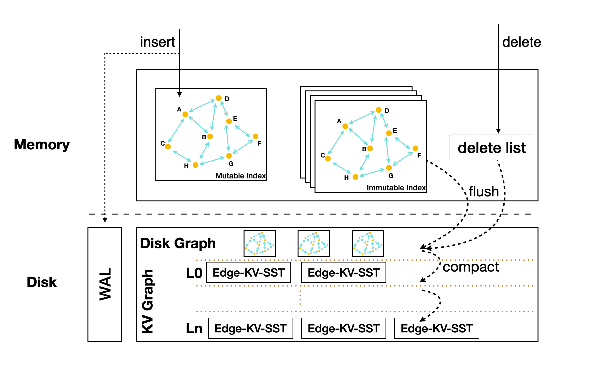
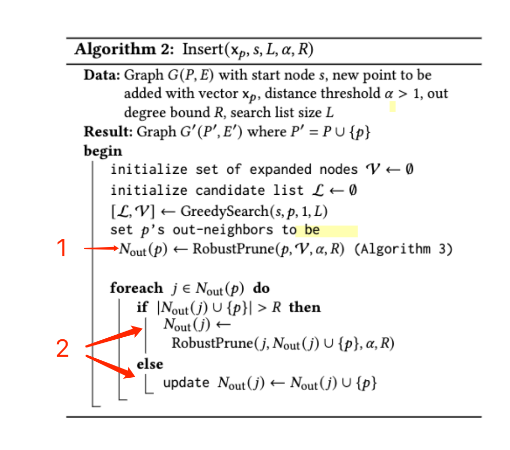
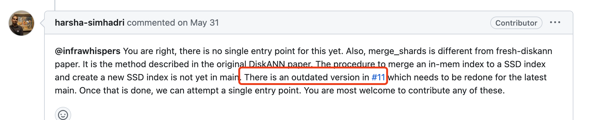
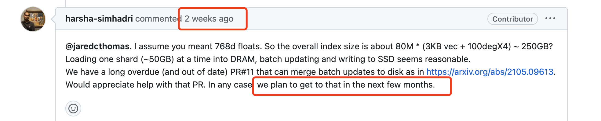

Vecrocks design

1. disk graph 如何和 kv graph 合并

FreshDiskANN的写入过程中，会对图的结构做以下变更
- 新写入的点创建它的出边
- Nout(p)的出边会被prune
- Delete流程会更新Nout(d)的上游和下游
对于这些变更的点（以及Nout(p)），我们需要一直缓存在内存中，直到这个disk graph写入kv graph完成
会有这样几个问题：
- 缓存的点是否会很多？预估是变更点的常数倍数，也许需要实验
- 如果每个disk graph有自己的cache，是否意味着这个步骤不能并发？
2. disk graph如何查询
花费k倍的内存，缓存disk graph，mmap到内存中执行图查询?
3. 是否存在一种图分割&合并的方式（暂时不考虑）
DISKANN是进行了kmeans之后，对于每个点都加入2-closest cluster中，合并时简单地连接所有的边。但是这个步骤仅限全量构造图的流程中。
如果我们能找到一种streaming的聚类方式，也许可以对图进行这样的分割。
4. DiskANN代码
FreshDiskANN 实现在一个很老的(2021.6)的，实验性的分支上，虽然能build(有些依赖比如MKL库要改)，但是是否能用于我们的baseline？
 
https://github.com/microsoft/DiskANN/issues/405#issuecomment-1656370311 https://github.com/microsoft/DiskANN/issues/355#issuecomment-1568944560 https://github.com/microsoft/DiskANN/pull/11
5. plan
- 在RockDB上设计vector insert&search的框架
- 确定要改的代码范围
- memtable结构变化
- 增加一层disk graph
- disk graph merge into kv graph
- in-memory的额外结构，topK queue、deletelist等
- 先实现成robust knn？
- 确定要改的代码范围
- 实现FreshDiskANN的Vamana索引
- 使用diskann repo的代码？如上所述是一个outdated状态
Last modified on 2023-08-06